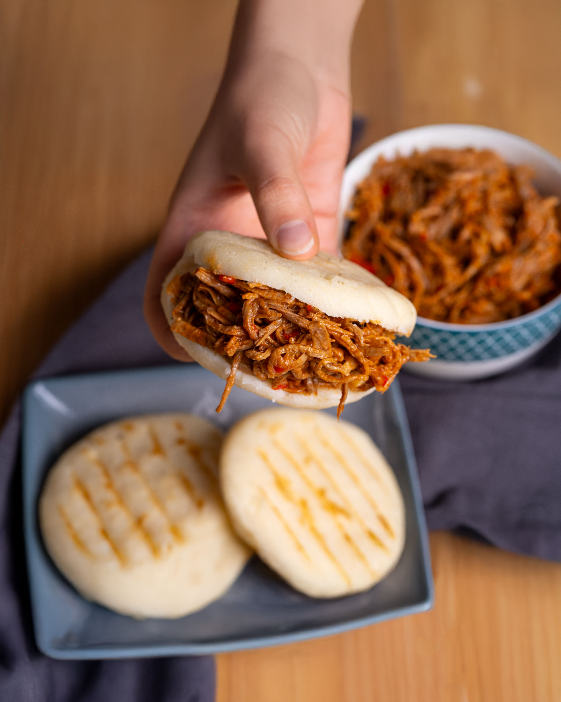

Arepa

Ingredients
fot about 4-6 portions
- 2 cups Pre-cooked corn flour
- 2 cups Warm water
- 1 tsp Salt
- 1 tsp Oil or butter (optional)
Steps
- Mix the water and salt in a deep bowl.
- Add the flour little by little while stirring with your hands to prevent lumps from forming.
- Knead for a few minutes until the dough is smooth, pliable, and does not stick to your hands.
- Let the dough rest for about 5 minutes.
- Form small balls and flatten them with the palms of your hands to create discs about 1 centimeter thick.
- Cook them on a lightly greased griddle, flat-top grill, or skillet over medium heat for about 5 minutes per side, until a golden crust forms. Optionally, you can finish cooking them in the oven for a few minutes to ensure the inside is fully cooked.
Home